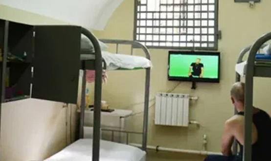
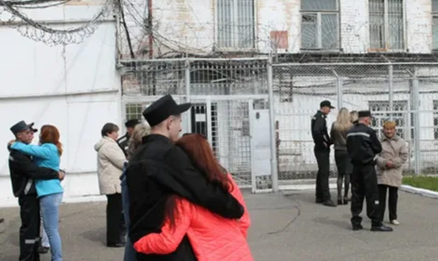

Преступления против конституционных прав и свобод человека и гражданина предусмотрены статьями 136–149 УК РФ (глава 19).
Видовым объектом названных преступлений выступают общественные отношения, связанные с осуществлением конституционных прав и свобод человека и гражданина. Определение непосредственного объекта конкретного деяния будет зависеть от того, реализации каких конституционных прав препятствует его совершение, – политических, социальных и др.
Объективная сторона большинства преступлений рассматриваемой группы характеризуется совершением активных действий (например, нарушение неприкосновенности частной жизни — ст. 137 УК); нарушение неприкосновенности жилища (ст. 139 УК), некоторые могут совершаться путем бездействия (например, отказ в предоставлении гражданину информации — ст. 140 УК), а отдельным из них свойственна как активная, так и пассивная форма поведения субъекта (например, при нарушении охраны труда — ст. 143 УК).
По конструкции составы рассматриваемых преступлений могут быть как материальными (нарушение равноправия граждан — ст. 136 УК, нарушение охраны труда — ст. 143 УК, нарушение изобретательских и патентных прав — ст. 147 УК и др.), так и формальными (нарушение тайны переписки, телефонных переговоров, почтовых, телеграфных или иных сообщений — ст. 138 УК, нарушение неприкосновенности жилища — ст. 139 УК; воспрепятствование законной профессиональной деятельности журналистов — ст. 144 УК и др.).
С субъективной стороны преступления в основном характеризуются умыслом. Нарушение охраны труда является неосторожным преступлением.
Субъектами рассматриваемых преступлений могут быть как частные, так и должностные лица, причем для отдельных составов этот специальный субъект обязателен (например, для отказа в предоставлении гражданину информации), а некоторые он квалифицирует (например, нарушение неприкосновенности частной жизни — ч. 2 ст. 137 УК).
Система преступлений против конституционных прав и свобод человека и гражданина включает следующие группы преступлений:
а) посягательства на личные права и свободы человека и гражданина – ст. 137, 138, 138.1., 139, 140, 148;
б) посягательства на политические права – ст. 136, 141, 141.1., 142, 142.1., 142.2., 149;
в) посягательства на трудовые права граждан – ст. 143, 144, 144.1., 145, 145.1.;
г) посягательства на интеллектуальную собственность – ст. 146, 147 УК.
Посягательства на личные права и свободы человека и гражданина
1) Нарушение неприкосновенности частной жизни (ст. 137 УК). Объект преступления — совокупность общественных отношений, складывающихся в процессе реализации права человека и гражданина на неприкосновенность частной жизни – сферы личных чувств, эмоций, межличностных отношений, семейных проблем, действий и решений, имеющих отношение к самому человеку, членам его семьи или иным близким для него людям. Предмет преступления — сведения, составляющие личную или семейную тайну, к которым относятся самые разнообразные сведения, касающиеся непосредственно личности потерпевшего или его семейной жизни: об образе жизни, о состоянии здоровья, о привычках, привязанностях, интимных связях, увлечениях, доходах и их источниках, об отношениях в семье и т.д., которые люди, как правило, содержат в тайне или доверяют узкому кругу лиц. Не имеет значения, опорочивают эти сведения потерпевшего или нет. Объективная сторона включает незаконное собирание или распространение сведений о частной жизни лица, составляющих его личную или семейную тайну, без его согласия; распространение этих сведений в публичном выступлении, публично демонстрирующемся произведении или СМИ. Субъективная сторона характеризуется виной в виде прямого умысла. Мотив — корыстная или иная личная заинтересованность — назван законом в качестве конструктивного признака состава рассматриваемого преступления. Субъект — физическое вменяемое лицо, достигшее 16-летнего возраста.
2) Нарушение тайны переписки, телефонных переговоров, почтовых, телеграфных или иных сообщений (ст. 138 УК). Объект преступления — совокупность общественных отношений, складывающихся в процессе реализации предоставленного гражданину РФ конституционного права на тайну сообщений. Объективная сторона состоит в нарушении этого права, т.е. в ознакомлении постороннего лица без согласия потерпевшего и при отсутствии законных к тому оснований с содержанием переписки, почтовых, телеграфных и иных сообщений, телефонных переговоров. Субъективная сторона — вина в виде прямого умысла. Субъект — физическое вменяемое лицо, достигшее 16-летнего возраста.
3) Незаконный оборот специальных технических средств, предназначенных для негласного получения информации (ст. 138.1. УК) – приборов, устройств, специальных инструментов для проникновения в помещения и программное обеспечение.
4) Нарушение неприкосновенности жилища (ст. 139 УК). Объект нарушения неприкосновенности жилища: основной — совокупность общественных отношений, связанных с реализацией названного конституционного права граждан РФ. Объективная сторона выражается в незаконном проникновении в жилище, совершенном против воли проживающего в нем лица. Если проникновение в жилище осуществляется с соблюдением требований закона (например, при производстве обыска с санкции прокурора), состав преступления отсутствует. Субъективная сторона — вина в виде прямого умысла. Субъект — физическое вменяемое лицо, достигшее 16-летнего возраста. Часть 2 ст. 139 УК предусматривает ответственность за нарушение неприкосновенности жилища, совершенное с применением насилия или угрозой его применения - в таком случае присутствует факультативный объект — здоровье личности.
5) Отказ в предоставлении гражданину информации (ст. 140 УК). Объект — совокупность общественных отношений, связанных с реализацией указанного конституционного права гражданина. Предмет — информация (документы и материалы), собранная в установленном законом порядке, непосредственно затрагивающая права и свободы гражданина (например, материалы служебного расследования в отношении гражданина, материалы проведенного дознания, прекращенного уголовного дела и т.д.). Объективная сторона складывается из неправомерного отказа в предоставлении гражданину информации, непосредственно затрагивающей его права и свободы, или предоставления гражданину неполной или заведомо ложной информации. Субъективная сторона характеризуется умышленной виной. Субъект специальный — должностное лицо (например, дознаватель, работники органов прокуратуры и т.д.).
6) Воспрепятствование осуществлению права на свободу совести и вероисповеданий (ст. 148 УК). Объект преступления — совокупность общественных отношений, связанных с осуществлением конституционных положений о свободе совести и вероисповедания. Объективная сторона состоит в незаконном воспрепятствовании деятельности религиозных организаций или совершению религиозных обрядов. Воспрепятствование должно быть незаконным и может выражаться в физическом воспрепятствовании проведению какого-либо обряда, например, службы, крещения, венчания, крестного хода и т.д., в необоснованном закрытии церкви, молельного дома, мечети, синагоги, их повреждении, уничтожении и др. Субъективная сторона — прямой умысел. Субъект — физическое лицо, достигшее 16-летнего возраста.
Посягательства на политические права
1) Нарушение равноправия граждан (ст. 136 УК). Объект преступления — совокупность общественных отношений, связанных с реализацией гарантированного Конституцией РФ принципа равноправия граждан независимо от их половых, расовых, национальных, религиозных и других признаков. Объективная сторона выражается в совершении любого деяния (действия или бездействия), которое полностью либо частично ущемляет законные права человека и гражданина. Например, отказ в приеме на работу в зависимости от национальной принадлежности, создание препятствий при поступлении в высшее учебное заведение в зависимости от отношения к религии и т.п. Субъективная сторона преступления — умышленная вина. Субъект — физическое вменяемое лицо, достигшее 16-летнего возраста.
2) Нарушение избирательных прав и избирательного законодательства – воспрепятствование осуществлению избирательных прав или работе избирательных комиссий (ст. 141 УК), нарушение порядка финансирования избирательной кампании кандидата, избирательного объединения, деятельности инициативной группы по проведению референдума, иной группы участников референдума (ст. 141.1. УК), фальсификация избирательных документов, документов референдума, документов общероссийского голосования (ст. 142 УК), фальсификация итогов голосования (ст. 142.1. УК), незаконные выдача и получение избирательного бюллетеня, бюллетеня для голосования на референдуме, бюллетеня для общероссийского голосования (ст. 142.2. УК). Субъективная сторона данных преступлений — прямой умысел. Субъект специальный – члены избирательных комиссий, инициативных групп или комиссий по проведению референдума.
3) Воспрепятствование проведению собрания, митинга, демонстрации, шествия, пикетирования или участию в них (ст. 149 УК). Объект преступления: основной — совокупность общественных отношений, связанных с реализацией названного конституционного права граждан РФ; факультативный — здоровье личности. Объективная сторона выражается в незаконном воспрепятствовании проведению собрания, митинга, демонстрации, шествия, пикетирования; или в незаконном воспрепятствовании участию в них; или в принуждении к участию в них. Условиями уголовной ответственности за рассматриваемое преступление являются совершение его должностным лицом с использованием своего служебного положения (признак субъекта) или применение насилия либо угрозы его применения (признак объективной стороны — способ совершения деяния). Субъективная сторона — вина в виде прямого умысла. Субъект: либо должностное лицо, либо частное (при условии совершения деяния указанным в законе способом).
Посягательства на трудовые права граждан
1) Нарушение требований охраны труда (ст. 143 УК). Объект преступления – установленные нормативными актами правила охраны труда, призванные не допускать вреда здоровью работников. Объективная сторона выражается в нарушении требований охраны труда, совершенном лицом, на которое возложены обязанности по их соблюдению. Под требованиями охраны труда понимаются государственные нормативные требования охраны труда, содержащиеся в федеральных законах и иных нормативных правовых актах. Обязательным условием наказуемости деяния является причинение в результате нарушения требований охраны труда тяжкого вреда здоровью человека или смерти. Субъективная сторона выражена в неосторожности. Субъект специальный – должностное лицо, ответственное за выполнение обязанностей по охране труда.
2) Воспрепятствование законной профессиональной деятельности журналистов (ст. 144 УК). Объектом преступления является профессиональная деятельность журналистов, независимость которой гарантирована законодательством. Возможен дополнительный объект – здоровье и имущество журналиста. Объективную сторону составляет воспрепятствование профессиональной деятельности журналистов путем принуждения их к распространению либо к отказу от распространения информации. Квалифицирующим признаком данного деяния может быть насилие над журналистом или его близкими либо повреждение или уничтожение их имущества, а равно угроза применения такого насилия. Субъективная сторона выражена в умысле. Субъект: либо общий – физическое вменяемое лицо с 16 лет, либо специальный – должностное лицо, использующее служебное положение для воспрепятствования работе журналиста.
3) Необоснованный отказ в приеме на работу или необоснованное увольнение лица, достигшего предпенсионного возраста (ст. 144.1. УК). Под предпенсионным возрастом понимается возрастной период продолжительностью до пяти лет, предшествующий назначению лицу страховой пенсии по старости. Объектом являются трудовые права лиц предпенсионного возраста по сохранению работы в преддверии выхода на пенсию. Необходимость защиты данной категории работников закреплена законодательством. Объективную сторону составляет необоснованный отказ в приеме на работу (по мотивам, связанным с возрастом, а не профессиональными качествами лица) или увольнение (по мотивам возраста, а не установленным Трудовым кодексом основаниям). Субъективная сторона выражена в умысле. Субъект специальный – должностное лицо, ответственное кадровый отбор, руководитель организации и другие лица, влияющие на наем и увольнение работников в организациях.
4) Необоснованный отказ в приеме на работу или необоснованное увольнение беременной женщины или женщины, имеющей детей в возрасте до трех лет (ст. 145 УК). Объектом являются трудовые права беременных женщин и женщин, имеющих детей в возрасте до трех лет, по сохранению работы в период беременности и отпуска ухода за ребенком. Объективную сторону составляет необоснованный отказ в приеме на работу (по мотивам, связанным с беременностью или уходом за ребенком) или увольнение (по мотивам беременности и ухода за ребенком, а не установленным Трудовым кодексом основаниям). Субъективная сторона выражена в умысле. Субъект специальный – должностное лицо, ответственное кадровый отбор, руководитель организации и другие лица, влияющие на наем и увольнение работников в организациях.
5) Невыплата заработной платы, пенсий, стипендий, пособий и иных выплат (ст. 145.1. УК). Объект преступления – установленное законодательством право работников на своевременную и полную выплату заработной платы, а также право граждан на получение установленных законом стипендий, пособий и т.п. Объективную сторону деяния составляют: частичная невыплата (в размере менее половины подлежащей выплате сумм) свыше трех месяцев заработной платы, пенсий, стипендий, пособий и иных установленных законом выплат; полная невыплата свыше двух месяцев заработной платы, пенсий, стипендий, пособий и иных установленных законом выплат; выплата заработной платы свыше двух месяцев в размере ниже установленного федеральным законом минимального размера оплаты труда. Субъективная сторона характеризуется умыслом. Принципиален мотив преступления – корыстная или иная личная заинтересованность субъекта преступления. Субъект специальный – руководитель организации, работодатель-физическое лицо, руководитель филиала, представительства или иного обособленного структурного подразделения организации. Отдельно предусмотрена возможность освобождения от уголовной ответственности, если лицо, впервые совершившее данное деяние, в течение двух месяцев со дня возбуждения уголовного дела в полном объеме погасило задолженность по выплате заработной платы, пенсии, стипендии, пособия и иной установленной законом выплате, а также уплатило проценты (выплатило денежную компенсацию).
Посягательства на интеллектуальную собственность
1) Нарушение авторских и смежных прав (ст. 146 УК). Объектом данного преступления являются гарантированные законодательством авторские и смежные права – права авторов произведения на распоряжение результатами своей интеллектуальной деятельности и права исполнителей на исполнение ими произведений других авторов. Объективная сторона деяния выражена в присвоении авторства (плагиате), незаконном использовании объектов авторского права или смежных прав, приобретении, хранении, перевозке контрафактных экземпляров произведений или фонограмм в целях сбыта. Обязательным условием уголовной ответственности за подобные деяния является причинение деянием крупного ущерба автору или иному правообладателю (если стоимость экземпляров произведений или фонограмм либо стоимость прав на использование объектов авторского права и смежных прав превышают сто тысяч рублей). Субъективная сторона деяния выражена в форме умысла. Субъект – физическое вменяемое лицо, достигшее 16-летнего возраста (квалифицирующим признаком может быть совершения данного деяния специальным субъектом – должностным лицом с использованием служебного положения).
2) Нарушение изобретательских и патентных прав (ст. 147 УК). Объектом данного преступления являются гарантированные законодательством изобретательские и патентные права – права авторов изобретений, промышленных образцов и полезных моделей на патентование (регистрацию авторства) объектов своей интеллектуальной собственности и распоряжение ими в виде передачи третьим лицам, получения вознаграждение за их использование. Объективная сторона деяния выражена в незаконном использовании изобретения, полезной модели или промышленного образца, разглашении без согласия автора или заявителя сущности изобретения, полезной модели или промышленного образца до официальной публикации сведений о них, присвоении авторства или принуждении к соавторству. Обязательным условием уголовной ответственности за подобные деяния является причинение деянием крупного ущерба. Субъективная сторона деяния выражена в форме умысла. Субъект – физическое вменяемое лицо, достигшее 16-летнего возраста.